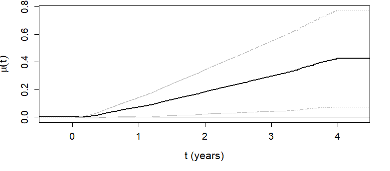

Chapter 3 - Nonparametric Estimation
Department of Biostatistics & Medical Informatics
University of Wisconsin-Madison
——————————————————————————————————–
2024 Society for Clinical Trials (SCT) Annual Meeting
(May 19, 2024; Boston, MA)
Restricted win ratio
WINS package)Restricted mean time in favor of treatment
rmt package)While alive analysis of weighted total events
WA package)\[\newcommand{\d}{{\rm d}}\] \[\newcommand{\T}{{\rm T}}\] \[\newcommand{\dd}{{\rm d}}\] \[\newcommand{\cc}{{\rm c}}\] \[\newcommand{\pr}{{\rm pr}}\] \[\newcommand{\var}{{\rm var}}\] \[\newcommand{\se}{{\rm se}}\] \[\newcommand{\indep}{\perp \!\!\! \perp}\] \[\newcommand{\Pn}{n^{-1}\sum_{i=1}^n}\] \[ \newcommand\mymathop[1]{\mathop{\operatorname{#1}}} \] \[ \newcommand{\Ut}{{n \choose 2}^{-1}\sum_{i<j}\sum} \] \[ \def\a{{(a)}} \def\b{{(1-a)}} \def\t{{(1)}} \def\c{{(0)}} \def\d{{\rm d}} \def\T{{\rm T}} \def\bs{\boldsymbol} \]
WINS (Cui & Huang, 2023)rmt::rmtfit() (I)status = k for entry into state \(k\), K+1 for death, 0 for censoringstatus = 1 for nonfatal event, 2 for death, 0 for censoringrmt::rmtfit() (II)rmtfit
obj$t: \(t\); obj$mu: a matrix of \((K+2)\) rows, \(\hat\mu_k(t)\) in \(k\)th row, \(\hat\mu(t)\) in last; obj$var: variances of point estimates in musummary(obj, tau) for summary results on \(\mu(\tau)\), including the \(\mu_k(\tau)\)
Kmax = k to merge \(\mu_{k+}(\tau)\sum_{k'=k}^K=\mu_{k'}(\tau)\)plot(obj) to plot \(\hat\mu(t)\) against \(t\)obj <- rmtfit(hfaction$patid, hfaction$time, hfaction$status, hfaction$trt_ab,
type = "recurrent")
summary(obj, Kmax = 4, tau = 3.97) ## combine recurrent events >= 4
# Restricted mean time in favor of group "1" by time tau = 3.97:
# Estimate Std.Err Z value Pr(>|z|)
# Event 1 0.0140515 0.0498836 0.2817 0.778184
# Event 2 0.0358028 0.0499618 0.7166 0.473619
# Event 3 0.1385287 0.0409533 3.3826 0.000718 ***
# Event 4+ -0.0064731 0.0600813 -0.1077 0.914203
# Survival 0.2384169 0.1143484 2.0850 0.037069 *
# Overall 0.4203268 0.1777363 2.3649 0.018035 * \(\hat\mu(t)\) as a function of \(t\)

| Estimate | SE | P-value | ||
|---|---|---|---|---|
| Hopitalization | 2.18 | 1.22 | 0.073 | |
| 1 | 0.17 | 0.60 | 0.778 | |
| 2 | 0.43 | 0.60 | 0.474 | |
| 3 | 1.66 | 0.49 | <0.001 | |
| 4+ | -0.08 | 0.72 | 0.914 | |
| Death | 2.86 | 1.37 | 0.037 | |
| Overall | 5.04 | 2.13 | 0.018 |
| Usual care (N = 221) | Exercise training (N = 205) | |
|---|---|---|
| Death | 57 (25.8%) | 36 (17.6%) |
| Avg # hospitalization (SD) | 2.6 (3.1) | 2.2 (3.1) |
WA packageWA::LRfit()id: unique patient identifier; time: event times; status: event types (1: recurrent event, 2: death, 0: censoring)Dweight: weight for death relative to nonfatalLRfit
summary(obj, tau) to summarize results for \(r(\tau)=\ell^{(1)}(\tau)/\ell^{(0)}(\tau)\)
joint.test = TRUE to include joint test with RMSTplot(obj) to plot the cumulative (WA) loss \(L^\a(t)\) (\(a= 1, 0\))obj <- LRfit(hfaction$patid, hfaction$time, hfaction$status,
hfaction$trt_ab, Dweight = 2)
summary(obj, tau = 3.97)
# Analysis of log loss rate (LR) by tau = 3.97:
# Estimate Std.Err Z value Pr(>|z|)
# Ref (Group 0) 0.262765 0.086018 3.0548 0.002252 **
# Group 1 vs 0 -0.226116 0.138131 -1.6370 0.101637
# ---
# Signif. codes: 0 ‘***’ 0.001 ‘**’ 0.01 ‘*’ 0.05 ‘.’ 0.1 ‘ ’ 1
# Point and interval estimates for the LR ratio:
# LR ratio 95% lower CL 95% higher CL
# Group 1 vs 0 0.7976253 0.6084453 1.045626Nonparametric estimands by time restriction
WINS) or MIrmt::rmtfit(id, time, status, trt)WA::LRfit(id, time, status, trt, Dweight)